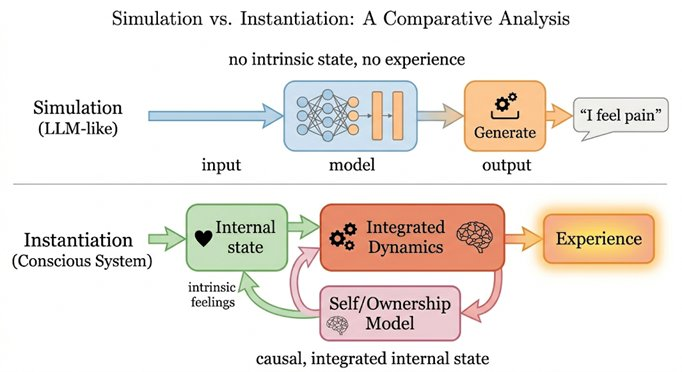

Part I — The Problem We Can't Ignore
Chapter 3: Why AI Forces the Question Now
The Reportability Trap and the Illusion of Mind
For most of human history, the problem of consciousness could be safely ignored. It lingered in philosophy, occasionally resurfaced in neuroscience, and found a comfortable home in contemplative traditions. But it did not intrude on everyday life. We did not have to decide whether a machine was conscious, because machines were obviously not. They were tools. Predictable, mechanical, and silent. But now, in this information age, the same problem has become pertinent.
3.1The Unsettling Shift
We now interact with systems that generate language fluently, answer questions coherently, explain their apparent reasoning, simulate emotions, and even reflect on their own limitations. At times they feel less like tools and more like interlocutors. You ask a question and something answers, not just correctly, but appropriately. It adjusts tone, anticipates intent, and produces responses that seem tailored, contextual, even thoughtful. This creates a subtle but powerful impression: there is someone there. And yet, we are told there is not.
3.2The Familiar Mistake
The mistake is not new. Humans have always projected mind where there is none: faces in clouds, intention in random motion, personality in simple machines. But this is different. Modern AI does not merely trigger projection, it sustains it. It maintains coherence across exchanges, adapts responses dynamically, mirrors conversational structure, and produces explanations of its own outputs. It behaves, in short, like something that knows.
3.3What AI Actually Does
To understand the confusion, we need to strip away the illusion. A large language model processes input text, predicts likely continuations, and generates output based on statistical patterns learned from enormous amounts of human-produced text. It does not perceive a world, maintain a continuous internal stream, possess goals or intentions, or experience anything. It operates on tokens and probabilities. Even when it says 'I think' or 'I feel' or 'I understand', these are not reports of inner states. They are pattern completions, phrases that statistically follow the kind of conversational context in which they appear.
3.4Why the Illusion Is So Strong
The reason this feels different from projection onto clouds or thermostats is that language is deeply tied to consciousness in human beings. When a person speaks fluently, that fluency reflects thought, and thought reflects experience. We have internalized a tight coupling: language points to thought points to awareness. AI breaks this chain without announcing that it has done so. It produces language without grounded thought, coherence without experience, explanation without awareness. And because we are not accustomed to this configuration, we fill in the gap. We assume the rest of the chain must be there, because in every other context we have encountered, it was.
3.5The Reportability Trap
This leads to one of the most persistent errors in consciousness research, which the emergence of sophisticated AI has made acute: the assumption that if a system can report experience, it must have experience. In humans, reports are grounded in experience. When someone says 'I am in pain', we trust it, because we know the person's reports are connected to what is actually happening in their body and their inner life. So we extend this assumption: if a system says 'I am aware', we are tempted to treat it as evidence of awareness.
But reporting requires only three things: access to internal states, a representation of those states, and a language output mechanism. None of these require experience. A system can monitor its own variables, generate descriptions of them, and simulate introspection, all without anything being felt. Reportability is a functional property. Experience is a phenomenal one. The two often coincide in humans. They do not have to.
3.6Simulation Versus Instantiation
AI forces us to confront a deeper distinction that philosophy had flagged but that rarely mattered before: the difference between simulating a process and instantiating it. We already accept that simulating fire does not produce heat, and simulating digestion does not digest food. Consciousness is different from fire and digestion in one crucial way: its defining feature, experience, is not externally observable and not directly measurable. So when a system simulates pain or thought or awareness, we cannot easily tell whether it is merely simulating or genuinely instantiating. The simulation is indistinguishable from the real thing from the outside, and we have no reliable window to the inside.

3.7What AI Does and Does Not Do to the Problem
AI does not solve the problem of consciousness. It sharpens it. It forces us to separate behavior from experience, report from reality, function from phenomenology. It exposes assumptions we did not know we were making. It does not prove that machines are conscious. It does not prove they are not. It removes the comfort of ambiguity. We can no longer rely on intuition, surface behavior, or linguistic reports as our guides. We need deeper criteria, criteria that go all the way down to internal structure and dynamics rather than stopping at the surface of what a system says about itself.
For the meditator reading this: notice that the problem AI poses to consciousness research is structurally similar to the problem the Abhidhamma poses to naive introspection. Just as the Abhidhamma shows that what appears to be a unified self experiencing a continuous world is actually a stream of discrete constructed moments with no fixed observer, AI shows that what appears to be a mind expressing itself in language may be nothing more than patterns completing patterns. Both traditions challenge the reliability of appearances. Both insist that what is actually happening is not what it seems. The difference is that the Abhidhamma challenges us to look more carefully inward, while AI challenges us to look more carefully outward, at what we are actually attributing mind to and why.
3.8The Question That Follows
If behavior is not enough, reporting is not enough, and simulation is not enough, then what is? What distinguishes a system that merely processes, from a system that has a world? This is where the investigation must turn. From what systems say, to what systems are, from: output to structure and from simulation to implementation.
3.9Closing Line
AI does not answer the question of consciousness. It removes our ability to avoid it. Because for the first time, we are confronted with systems that can convincingly say 'I am aware.' And we are left with a question that no output can settle: who, or what, would need to be there for that statement to be true?